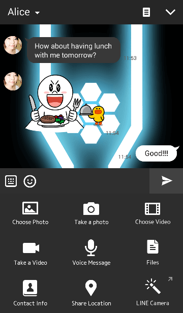
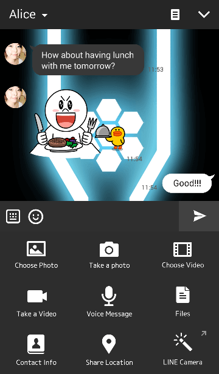

Yusatsu Nao's Blog
Thursday, January 5, 2017
Glowing Fragment LINE THEME Released
Posted by Yusatsu Nao
Hello guys, welcome to my official site. Happy New Year to you all, right now I post my second LINE Theme, well it takes a long time to release because the reviewer take a vacation. Maybe I should take a vacation, well I really need a real job right now. Now my second LINE Theme is now released, a sci-fi thing I hope you like it. You can buy & Download it from LINE Store. here is the screenshot.
THEME TITLE : Glowing Fragment


and here is the link to the Theme.
Click here
I hope you enjoy this theme. I will create more LINE Theme later and other stuff too. So, follow this site and follow my official LINE@ Account, you can check it on About Page and find LINE@ Account on there. Thanks for visiting my site.